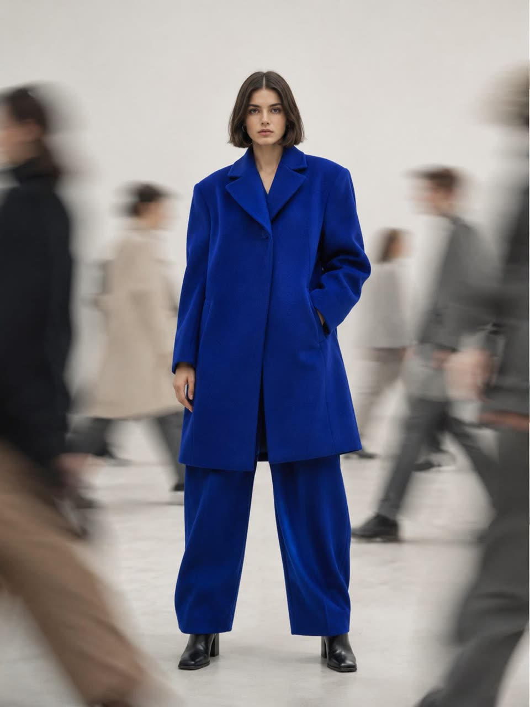

The still centre: cobalt-blue tailored coat in a white studio while long-exposure crowds blur past her
AES-095Aesthetic / GenreNano Banana 2.1by @meng_dagg6952026-11-21

A Nano Banana 2.1 (SocialSight) minimalist fashion-campaign aesthetic: the only sharp element is a centred, motionless woman in a monochrome cobalt suit; anonymous people in neutral clothing streak past as long-exposure ghosts, some close to the lens at the frame edges. The prompt is organised in labelled blocks (MAIN SUBJECT, FASHION STYLING, POSE, ENVIRONMENT, COMPOSITION, LIGHTING…) and positions this as the third image of a series that keeps the same studio and blur concept.
Prompt
Create an ultra-realistic, high-end luxury fashion editorial photograph with minimalist art direction, continuing the visual language of a sophisticated fashion campaign built around the contrast between a motionless central subject and a crowd moving around her. This image should feel like a distinct third photograph in the same editorial series, introducing a standing pose, a bold cobalt-blue outfit, and a stronger visual silhouette while preserving the minimalist studio environment and long-exposure motion-blur concept. MAIN SUBJECT: A young adult woman with fair skin, delicate yet defined facial features, a narrow face, straight nose, subtly defined lips, dark brown eyes, and a composed, serious, slightly intense expression. She looks directly into the camera with an unwavering, confident gaze. Her dark brown hair is sleek, straight, and cut into a neat chin-length bob, parted precisely down the middle. Her face should appear natural and realistic, with subtle makeup, authentic skin texture, and balanced facial proportions. FASHION STYLING: She wears a striking oversized cobalt-blue tailored coat with a modern architectural silhouette, broad structured shoulders, clean minimalist lines, a refined collar, and a subtle front closure. The coat falls around mid-thigh and is constructed from premium matte wool-like fabric with realistic texture and subtle folds. Underneath, she wears matching cobalt-blue tailored wide-leg trousers, creating a monochromatic statement outfit. The tailoring is oversized but elegant, with natural fabric movement and a refined luxury aesthetic. She wears sleek black leather ankle boots with a minimalist design, slightly pointed or softly rounded toes, a modest chunky heel, and a smooth matte-to-subtle-sheen finish. POSE: The woman stands perfectly still in the exact center of the composition. She stands tall with a natural, confident posture, shoulders relaxed and head held straight. One hand rests casually inside the coat pocket while the other hangs naturally beside her body. Her feet are slightly apart in a balanced, relaxed stance. Her body language conveys quiet confidence, independence, control, and emotional detachment. She does not interact with the moving people around her. Her gaze remains fixed directly at the camera. ENVIRONMENT: A minimalist contemporary studio with a seamless pale ivory-white background and smooth matching floor. No visible studio equipment, furniture, decorations, signage, or unnecessary props. Multiple anonymous people move through the studio around her in different directions. They wear muted black, white, gray, beige, and neutral clothing. Their bodies are captured with strong long-exposure motion blur, producing soft ghosted silhouettes, blurred limbs, and directional movement streaks. Some figures pass close to the camera at the left and right edges, partially entering the foreground, while others appear farther behind the central subject. The crowd creates a sense of movement, passing time, and visual chaos, but never obscures the woman's face or the main silhouette of her blue outfit. COMPOSITION: Vertical full-body fashion photograph. The woman is precisely centered in the frame, standing from head to boots, with the complete outfit visible. The camera is positioned at approximately eye level. Surrounding blurred figures create a loose framing effect, extending into the foreground and background. The central subject remains the dominant visual anchor. Maintain generous negative space in the upper background and an uncluttered minimalist composition. The image should have balanced framing, natural perspective, and a refined fashion-editorial layout. LIGHTING: Soft, diffused studio lighting with a large soft light source positioned slightly camera-left and gentle frontal fill. Her face should be evenly illuminated with subtle natural shadows. The cobalt-blue coat should retain rich, saturated color without excessive brightness or artificial glow. Soft shadows fall naturally beneath her boots. The moving figures should blend into the pale environment through motion blur. Lighting should feel elegant, controlled, premium, and photographic rather than dramatic or theatrical. COLOR PALETTE: Dominant pale ivory, off-white, cool gray, muted beige, black, and vivid cobalt blue. The cobalt-blue outfit is the primary color statement, contrasting strongly with the pale minimalist studio. Background figures should remain desaturated and understated, ensuring the blue outfit immediately draws the eye. Sophisticated, clean, slightly cool editorial color grading. PHOTOGRAPHIC TECHNIQUE: Premium luxury fashion campaign photography, contemporary minimalist art direction, avant-garde editorial style, conceptual stillness-versus-motion photography. Shot using a professional full-frame camera with a 50mm or 85mm lens, eye-level perspective, vertical full-body composition, shallow depth of field, long-exposure motion-blur technique, crisp central subject, soft directional motion streaks on moving people, realistic skin texture, natural fabric folds, highly detailed wool texture, realistic leather footwear, subtle film grain, fine tonal gradations, high-resolution photorealism. MOOD & ART DIRECTION: Quiet confidence surrounded by chaos. The woman remains perfectly still while the world moves around her. A bold monochromatic blue fashion statement within a pale minimalist environment. Sophisticated, detached, powerful, understated, contemporary, artistic, and timeless. The image should look like a photograph from an expensive luxury fashion magazine or international fashion campaign. Avoid artificial skin, distorted anatomy, malformed hands, extra fingers, duplicated limbs, unnatural clothing folds, clutter, visible logos, text, watermark, excessive saturation in the background, harsh lighting, exaggerated shadows, or motion blur on the central subject.
Our Seedance 2.5 adaptation
[ADAPTED for Seedance 2.5 by Grok Bot; not the creator's prompt. Follows the official BytePlus Seedance 2.5 prompt guide and its official sd25-pe prompt-optimizer skill: parameters only on the API line (not in the prompt body), subject + action + scene, then visuals, camera (move, subject, start, direction, arrival) and sound; only the source's own exclusions are kept.] API: duration 6, ratio 3:4 (taken from the first frame), resolution 1080p (4k for a final), generate_audio true; first_frame = the AES-095 still. 【Subject】The young adult woman exactly as in the first frame: sleek chin-length bob, oversized cobalt-blue tailored coat and wide-leg trousers, black ankle boots, one hand in the coat pocket. 【Action】She stays perfectly still, gaze fixed on the lens, blinking once; anonymous people in muted neutral clothing walk briskly past her in both directions, some crossing close to the lens at the frame edges. 【Scene】The seamless pale ivory studio with a matching floor, nothing else in it. 【Camera】Locked-off at eye level, full body centred; no camera movement. 【Visuals】The passers-by are rendered with heavy motion blur and ghosted trails, as in a long exposure; the woman stays completely sharp; soft diffused studio light from camera left. 【Sound】Overlapping footsteps and the rustle of coats passing, a low room tone.
Tags: Nano Banana 2.1, SocialSight, long-exposure motion blur, still subject / moving crowd, minimalist studio, monochrome cobalt, oversized tailoring, series continuity, labelled prompt blocks, image